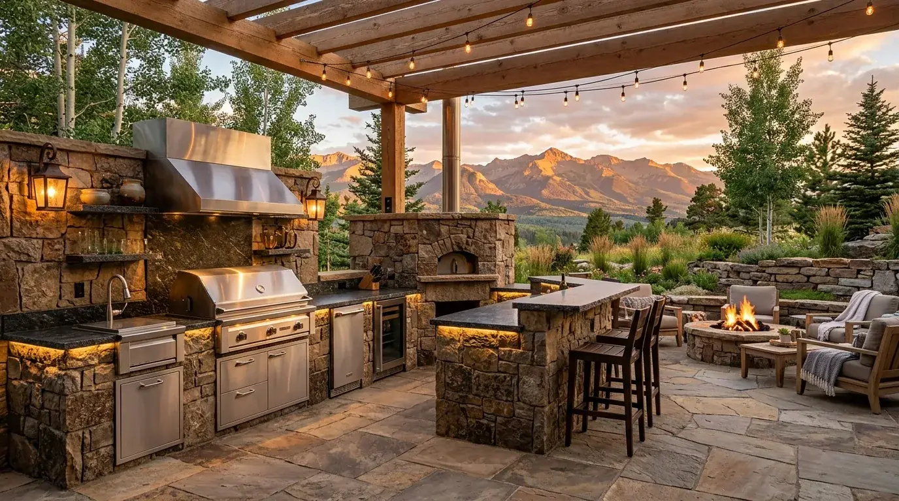

Patios & walkways
Natural stone, pavers, and durable aggregate surfaces for outdoor dining, gathering, and everyday circulation.
Waxwing Landscaping designs and builds patios, walkways, retaining walls, fire features, and drainage solutions that look considered and hold up through Longmont’s freeze-thaw cycles.

Good hardscaping starts below the surface. We plan the base, grade, drainage, materials, and transitions together so your outdoor space is comfortable to use and easier to maintain.
Natural stone, pavers, and durable aggregate surfaces for outdoor dining, gathering, and everyday circulation.
Engineered-looking lines and stable wall systems that manage grade changes while improving usable yard space.
Practical corrections for standing water, runoff, erosion, and areas that never quite dry out.
Recent hardscape from the same crew: a curved block edge on a garden path, a round fire pit on pavers, and a river-rock channel between the beds.
Tell us what you want to change, and we’ll help you understand the practical next steps.
Start your project